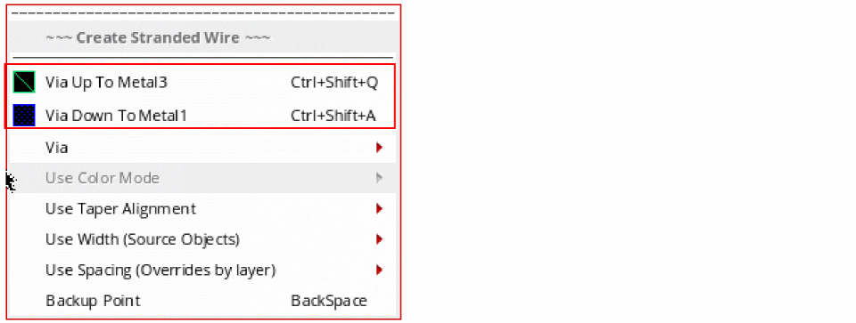

6
Working with Stranded Wires
Stranded routing lets you increase current capacity between two points by creating smaller pathSegs next to each other instead of a large sized pathSeg. At the same time, it also controls resistance and metal density.
The stranded wire feature is available only in Layout XL and higher tiers. The Create Stranded Wire command lets you create a wire comprising multiple strands in a single direction on a single net. This command works without specifying a constraint in the Constraint Manager. A stranded wire can be created from the following starting points:
This section describes the following stranded wires functionality.
- Creating a Stranded Wire
- Inserting Vias Automatically
- Tapering in Stranded Wire
- Enabling Bridge Vias Using WSPs (ICADVM20.1 Only)
- Avoiding Shorts with Existing Blockages
- Filtering Objects by Net Name
Creating a Stranded Wire
-
Choose Create – Wiring – Stranded Wire and press
F3. Alternatively, use theCtrl+Shift+Skeys to start the Create Stranded Wire command and then pressF3.
The Create Stranded Wire form opens. You can set the stranded wire parameters in this form or using the bindkeys. The most useful bindkeys and shortcuts for the Create Stranded Wire command are displayed in the Interactive Routing Bindkey hint box at the top-left corner of the layout canvas. In case, you want to disable the hint box for the Create Stranded Wire command, deselect the Show Hints option in the Layout Editor Options form.
- From the Layers assistant, select a layer on which you want to create the stranded wire.
- To create a stranded wire in an empty space in the design display area:
-
To create a stranded wire that has connectivity in an empty space in the design display area, in the Create Stranded Wire form, specify a net name for the stranded wire. The stranded wire being created is assigned to the specified net. If the specified net does not exist in the design, it is created.
-
Use the Via Up or Via Down option from the Create Stranded Wire context-sensitive menu to insert a via on the stranded wire.
-
To create a stranded wire from an existing pin, start the Stranded Wire command and click at the pin to digitize the stranded wire. The following figure shows a stranded wire being created from a pin on
Metal2.
For more information, see Creating a Stranded Wire from an Existing Pin. -
To create a stranded wire from an existing wire, select the wire and start the stranded wire command.
For more information, see Creating a Stranded Wire from an Existing Wire. -
To change the width of the stranded wire, type the desired width in the Strand Width field. Alternatively, use the
Ctrl+Shift+Scroll UporCtrl+Shift+Scroll Downto increase or decrease the width of the stranded wire. The default width displayed in the Strand Width field is determined from theminWidthconstraint for each routing layer.
-
To change the number of strands in the stranded wire, type the desired number of strands in the Strand Number field. Alternatively, use the
Ctrl+1bindkey to increase the number of strands andCtrl+2bindkey to decrease the number of stranded wires. The default number of strands that get created are2.
-
Change the spacing between the strands by specifying the desired spacing in the Strand Spacing field. Alternatively, you can use the
Ctrl+3bindkey to increase the spacing andCtrl+4bindkey to decrease the spacing between the strands. The default spacing value is based on theminSpacingconstraint for each layer that can be used for routing. The following figure shows an increase in the spacing between the strands.
-
Select the begin and end extension style. You can choose truncate, auto, extend, variable, or custom. The default begin and end extension style is auto.The begin and end style that are finally applied to a stranded wire depends on the begin and end extension values you specify for them. For example, if you choose custom as the Begin Style and End Style but the extension value corresponds to that of extend, the stranded wire will have extend begin and end styles.
-
Choose a value from the Snap Mode cyclic field. If set to diagonal, a warning message is displayed in CIW informing that only orthogonal stranded wires are supported. The mode is automatically changed to orthogonal.
- Select Auto Terminate to allow the stranded wire you are creating to be terminated with a single click.
-
You can finish a stranded wire at any point by double clicking or by pressing
Enter. The stranded wire ends at the pointer location. -
Right-click in the canvas to display the Create Stranded Wire context-sensitive menu. For more information, see Create Stranded Wire Context-Sensitive Menu.

Creating a Stranded Wire from an Existing Pin
To start creating a stranded wire from an existing pin:
- Choose Create – Wiring – Stranded Wire.
-
Click the pin to digitize the stranded wire. The following figure shows a stranded wire being created from a pin on
Metal2.
-
Now, right-click to display the Create Stranded Wire context-sensitive menu.
-
Place the mouse pointer on the Use Width option. You can see that the Tap Shapes and Pins Width option is selected by default, In this case, the stranded wires are evenly spread to cover the existing pin. The width and spacing of the stranded wires are calculated automatically based on the maximum width and minimum spacing of the layer, if not specified in the Create Stranded Wire form.
However, when the Tap Shapes and Pins Width option is deselected, the stranded wires are created from the click point. If the width and spacing are not specified,minWidthandminSpacingare used.
The following figure shows how the stranded wires are created when the Tap Shapes and Pins Width option is selected and deselected and how the spacing is adjusted when the number of strands in a stranded wire increases.
-
To terminate the stranded wires on a target pin, select Tap Shapes and Pins Width. The strands are automatically spread along the target pin. However, when the Tap Shapes and Pins Width is deselected, the strands does not spread out and are digitized at the click point.
The following figure shows the termination of stranded wires on the target pin when the Tap Shapes and Pins Width option is selected and deselected.
Creating a Stranded Wire from an Existing Wire
To create a stranded wire from an existing wire:
- Choose Create – Wiring – Stranded Wire.
-
Select the Tap Wires Width option from the Use Width submenu.
-
Select the end of the existing wires by area selection and continue to create the stranded wire.
The stranded wire is created. For the created stranded wire, the Use Width option is automatically set to Source Object and the stranded wire continues with the width and spacing of the source object. In addition, the number of strands remains constant.
- Now, deselect the Tap Wires Width option from the Use Width submenu.
-
Select the Override by Layer or the Default Constraints option from the Use Width submenu.
In this case, the width of the stranded wire is changed based on the option that you have selected from the Use Width submenu. However, the number of strands remains constant.
-
Insert vias on the existing wire by selecting the Via Up To <Metal Layer> or Via Down To <Metal Layer> option from the Create Stranded Wire context-sensitive menu.
 -
Select the Tap Vias Width option from the Use Width submenu.
-
Select the inserted vias by area selection and continue to create the stranded wire.
The stranded wire is created. For the created stranded wire, the Use Width option is automatically set to Source Object and the stranded wire continues with the width and spacing of the source object. In addition, the number of strands remains constant.
- Now, deselect the Tap Via Width option from the Use Width submenu.
-
Select the Override by Layer or the Default Constraints option from the Use Width submenu.
In this case, the width of the stranded wire is changed based on the option that you have selected from the Use Width menu. However, the number of strands remains constant.
Creating a Stranded Wire from Tieout
Sometimes it is necessary to branch from an existing stranded structure. This is what is called as tieout. You can create a stranded wire from a tieout when the existing stranded structure belongs to the same net.
To create a stranded wire from a tieout:
- Choose Create – Wiring – Stranded Wire.
-
In the existing stranded structure, select by area from where you want to start creating the stranded wire.
The Select Via form displays.
-
From the Select Via form, select the layer on which to create the stranded wires and click OK. The following figure shows how the stranded wires is created from tieout.
Creating a Stranded Wire from a Rectangle or PathSeg Covering a Pin
You can create a stranded wire from the rectangle and pathSeg that completely covers a smaller pin shape of the same metal layer and net name. In this case, the rectangle and the pathSeg is considered as a pin and stranded wires can be created, starting from them. The following figure shows how the stranded wires are created from a rectangle that completely covers a smaller pin shape.
Inserting Vias Automatically
The Create Stranded Wire command supports automatic insertion of vias on source and target objects. A via is automatically inserted when you start a stranded wire from a different metal layer than the metal layer on which the object exists.
To automatically insert vias while creating a stranded wire:
- Select the desired metal layer from the Layers pane.
- Choose Create – Wiring – Stranded Wire.
-
Hold the
Ctrlkey and click the object from which you want to start the stranded wire.
A via is automatically inserted on the source object and the stranded wire continues on the selected metal layer.
The following figure shows an example where the vertical shape is the source pin which is onMetal2. The horizontal stranded wires are onMetal3. TheM3M2via is automatically inserted on the source pin when you start creating the stranded wire.
Similarly, a via can be automatically inserted on a target object, as shown in the following figure.
You can also slide the stranded wire along with the vias. To slide the current section of the stranded wire, hold theCtrl+Shiftkeys and move the mouse pointer to the right or left of the current position. The following figure shows the change in the via position when the stranded wire slides from left to the right.
Tapering in Stranded Wire
Tapering in stranded wire lets you align the strands in a stranded wire when the number of strands are changed on each section in the same direction for the same layer or different metal layers. To do this,
- Choose Create – Wiring – Stranded Wire.
- Start creating a stranded wire with four strands from left to right. When the stranded wires are created in the horizontal direction, the taper alignment mode can be selected as top, center, or bottom.
-
Right-click the stranded wire being created and place the mouse cursor on the Use Taper Alignment option. A submneu is displayed.
- Select top, center, or bottom as the taper alignment mode.
-
Increase or decrease the number of strands using the
Ctrl+1orCtrl+2bindkeys, respectively.
The following figure shows how the stranded wires are aligned when the number of strands is reduced or increased and the taper alignment mode is selected as top, bottom, or center.
When the stranded wire is being created in the vertical direction from top to bottom, the taper alignment mode can be selected as right, center, or left. The following figure shows how the stranded wire is aligned when the number of strands is reduced or increased and the taper alignment mode is selected as right, center, or left.
Similarly, you can reduce or increase the number of strands when the stranded wire is on different metal layers. To reduce or increase the number of strands on a different metal layer, select Via Up To <Metal layer> or Via Down To <Metal Layer>.
The following figure shows how stranded wires in the horizontal direction are aligned when the number of strands are reduced or increased on a different metal layer.
Similarly, the following figure shows how stranded wires in the vertical direction are aligned when the number of strands are reduced or increased on a different metal layer.
Enabling Bridge Vias Using WSPs (ICADVM20.1 Only)
Using standard vias can increase the spacing between the wires and thus reduce density. Therefore, using bridge vias with a stranded wire allows wires to be placed closer to each other to maintain density. A bridge via forms a bridge between two lines in a stranded wire. In a bridge via, the cut layer stretches across both strands to form the connection.
- From the Wire Snapping section of the Layout Editor Options form, select Snap Pattern.
- Choose Create – Wiring – Stranded Wire.
- Start creating a stranded wire with two strands.
- Right-click the stranded wire being created. The Create Stranded Wire context-sensitive menu gets displayed.
- Choose Via – Select Via. The Select Via form is displayed.
-
Click the Options button in the Select Via form. The Select Via Options form is displayed.
-
Select the bridge via definition from the Select Via Options form. The bridge via definition appears in the Select Via Options form only if it is defined in the technology file.
-
Click OK. The following figure shows how the bridge via is automatically inserted at the intersection of two tracks on different metal layers.
Bridge vias are usually paired. However, if you have odd number of stranded wires, a single cut via is inserted. In case of vertical bridge via, the via of the rightmost wire is the single cut via. In case of horizontal bridge via, the via of the top wire is a single cut via.
When you modify the spacing between the stranded wires, strand spacing having the bridge via pair remains constant. However, the strand spacing between the other stranded wires change, as shown in the following figure.
You can increase the number of strands when a bend is made and a bridge via is inserted. The following figure shows an increase in the number of strands. The strand is added to the right and the existing strands move to the left.
When the number of strands are increased or decreased from an even number to an odd number, then the topmost or the rightmost via is modified to a single cut via.
You can also add a bridge via on a pin. For this, you must adjust the pin spacing to match the bridge via spacing. The following figure shows the result when the pin spacing is not adjusted to match the bridge via spacing.
When MPT is selected and bridge via is created, then the color mode must be optimized. You cannot create a bridge via when the color mode is uniform, The following warning message is displayed when you try to creata a bridge via in uniform color mode. *WARNING* (WE-27603): Cannot create bridge via in uniform color mode. Switch to mode before creating the bridge via. For more information on color modes in stranded wire, see Specifying the Color Mode in Stranded Wire.
Avoiding Shorts with Existing Blockages
The stranded routing feature has been enhanced to avoid creating a short with an existing blockage by skipping tracks. Any shape on the same layer but with a different net name between previous bend and current point is considered a blockage. Blockages can be avoided only when creating a stranded wire starting from a space. In addition, only blockages on the same layer with a different net name are avoided. To route the net without a short, the Stranded Wire command uses the next nearest track that does not have a blockage.
The following scenarios illustrate how a stranded wire skips the track on which a blockage appears and accordingly adjusts to the next nearest track that does not have any blockage.
Scenario 1: Blockage is on layer Metal2 with net name A.
-
Choose Create – Wiring – Stranded Wire and press
F3. -
Specify the net name
Bin the Net Name field. -
Move the stranded wire in the direction in which a blockage with net name
Aappears.
The stranded wire with net name B skips the track that has a blockage with net name A and accordingly adjusts to the next nearest track that does not have any blockage.
Scenario 2: Blockage is on layer Metal2 with net name A. Increase or decrease the number of stranded wires.
-
Choose Create – Wiring – Stranded Wire and press
F3. -
Specify the net name
Bin the Net Name field. -
Use the
Ctrl+1bindkey to increase the number of strands.
The increased number of stranded wires skip the track that has a blockage with net name A and accordingly adjusts to the next nearest track that does not have any blockage.
Scenario 3: Blockage is on layer Metal2 with net name A. In addition, a wire exists with net name A. Create a stranded wire starting from an existing wire.
- Choose Create – Wiring – Stranded Wire.
-
Click the existing wire to digitize the stranded wire and continue creating the wire. The stranded wire is automatically assigned the net name
B. -
Move the stranded wire in the direction in which a blockage with net name
Aappears.
In this case, the stranded wire does not start from an empty space and is, therefore, considered a normal wire. A short is created when the stranded wire overlaps the blockage with net name A.
Scenario 4: Blockage is on layer Metal2 with net name A. In addition, a wire with net name A exists. Create a stranded wire starting from an empty space and overlapping with another wire with the same net name A.
- Choose Create – Wiring – Stranded Wire.
-
Specify the net name
Bin the Net Name field. -
Move the stranded wire towards the direction in which another wire with the same net name appears.
The stranded wire overlaps the existing wire with the same net name. -
Continue to move the stranded wire in the direction in which a blockage with net name
Aappears.
Now, the stranded wire skips the track on which the blockage with net name A appears and accordingly adjusts to the nearest track that does not have any blockage.
Scenario 5: Blockage with net name A exists on layer Metal3. Create a stranded wire starting from an empty space on layer Metal2 and then change the direction by inserting vias.
- Choose Create – Wiring – Stranded Wire.
-
Specify the net name
Bin the Net Name field. -
Choose the Via Up or Via Down option from the Create Stranded Wire context-sensitive menu to insert a via on the stranded wire.
When the via is inserted, the direction of the stranded wire is changed. -
Move the stranded wire in the direction in which
Metal3blockage with net nameAappears.
In this case, the stranded wire skips the track on which Metal3 blockage appears and accordingly adjusts to the nearest track that does not have any blockage.
Scenario 6: Blockage with net name A exists on Metal3 layer. Increase the space between the stranded wires.
- Choose Create – Wiring – Stranded Wire.
-
Specify the net name
Bin the Net Name field. -
Choose the Via Up or Via Down option from the Create Stranded Wire context-sensitive menu to insert a via on the stranded wire.
When the via is inserted, the direction of the stranded wire is changed. -
Move the stranded wire in the direction in which
Metal3blockage with net nameAappears. -
Use the
Ctrl+3bindkey to increase the spacing between the stranded wires.
The increased spacing between the stranded wires skips the track that has blockage with net name A and accordingly adjusts to the next nearest track that does not have any blockage.
Scenario 7: Two blockages exist both having net name A, one on Metal2 and the other one on Metal3.The stranded wire is created from an empty space on layer Metal2 and changes the direction by inserting vias.
- Choose Create – Wiring – Stranded Wire.
-
Specify the net name
Bin the Net Name field. -
Choose the Via Up or Via Down option from the Create Stranded Wire context-sensitive menu to insert a via on the stranded wire.
When the via is inserted, the direction of the stranded wire is changed. -
Move the stranded wire in the direction in which
Metal3blockage with net nameAappears.
The stranded wire skips the track on which Metal3 blockage with net name A appears and accordingly adjusts to the nearest track that does not have any blockage. While avoiding the blockage on Metal3, the stranded wire creates a short with the blockage on Metal2 with net name A.
To avoid the short between the stranded wire and the blockage on Metal2 with net name A, slide the stranded wire to the right or left along with the vias. To slide the current section of the stranded wire, hold the Ctrl+Shift keys and move the mouse pointer to the right or left of the current position.
The stranded routing skips tracks to avoid creating a short with an existing blockage on colored WSPs. For more information, see Avoiding Shorts with Existing Blockages on Colored WSPs.
Filtering Objects by Net Name
To start a stranded wire from a desired net without any difficulty, the Stranded Wire command has been enhanced to provide the capability of filtering by net name and by active layer-purpose pair.
To filter objects by net name, perform the following steps:
- From the Navigator Assistant, select the net from which you want to start the stranded wire.
-
Choose Create – Wire – Stranded Wire. If a net is selected in the Navigator Assistant, it is automatically synchronized and imported to the Net Name field of the Create Stranded Wire form.
-
Drag to draw a bounding box around the pins for creating a stranded wire. If the net name appears in the Create Stranded Wire form, the stranded wire starts from the pins connected to the selected net. The other pins that are not connected to the selected net are filtered.
The following figure shows an example where netais selected in the Navigator Assistant andmetal1 drwis the active layer-purpose pair. In this case, the stranded wire starts from the pins on netaof layermetal1.
Here is another example where netais selected in the Navigator Assistant andmetal2 drwis the active layer-purpose pair. In this case, the stranded wire starts from the pins on netaofmetal2layer.
-
To filter objects by the active layer-purpose pair in the palette, select a layer-purpose pair in the palette. The selected object that has the same layer-purpose pair as the active layer-purpose pair in the palette has a higher priority.
The following figure shows an example wheremetal2 drwis selected as the active layer-purpose pair, and a net is not selected in the Navigator Assistant. In this case, the stranded wire starts from the pin that is onmetal2 drw.Also,metal2drwis the active layer-purpose in the palette.
Objects filtered by net names are at a higher priority than by active layer-purpose pairs.
Return to top